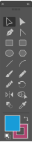

Guillaume Guinchard
UI designer

Je pratique principalement une activité de UI designer et designer en communication globale.
J’ai diverses expériences en web design, graphisme, publicité, édition, et imprimerie.
 mon profil linkedin
mon profil linkedin
Expériences professionnelles

- Depuis le 09/2011
UI Designer freelance
Conception de wireframe, Conception d'interface, Conception de mockup
- Depuis le 09/2008
Designer Graphique freelance
Conception d'identité visuelle, Conception de maquette (édition) Conception de campagne publicitaire,
Conseil en stratégie et marketing digital, Rendu 3D, Impression 3D
- Du 09/2005 au 09/2008
Graphiste
Pm conseil, Besançon
- Du 09/2003 au 09/2004
Infographiste 2D, Web designer
Maquettes web, print et intégration
Arobase communication, Dijon
- Du 09/2002 au 09/2003
Opérateur PAO, Technicien prépresse
Mise en pages, chromie pour éditions Michelin, Larousse, Hachette, VUEF
IME, Baumes les Dames
- Du 09/2001 au 08/2002
Assistant Offset
Maquettes web, print et intégration
Imprimerie Petit-Jean, Beaucourt
Compétences

- Photoshop
- Illustrator
- In-design
- Adobe XD
- Sketch
- Axure
- Animate
- Cura
- UI design
- Branding
- Éditions (PAO)
- Impression 3D
- Super Mario Kart (version super nes)
Formations
Retour à la présentation